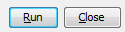
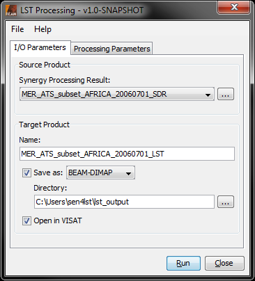

| LST Processing |
|
The Land Surface Temperature retrieval is basically a two-step procedure.
In the first step, a MERIS/AATSR (OLCI/SLSTR) collocated SDR product is generated from
two overlapping MERIS and AATSR (OLCI and SLSTR) L1b products.
For MERIS/AATSR, this step needs to be done with the SDR Synergy Processing Tool.
The SDR Synergy Processing Tool can be invoked from the VISAT tool menu by selecting
the SDR Synergy Processor... command, or in batch mode by using the command line
tool gpt (Graph Processing Tool) which is located
in the BEAM bin directory.
For the OLCI/SLSTR simulation mode explained below, this step is skipped. In this case, the supported input simulation data are already (OLCI/SLSTR) collocated products which were preprocessed independently.
In the second step, an LST product is generated from the MERIS/AATSR (OLCI/SLSTR)
collocated SDR product. This step needs to be done with the LST Processing Tool.
The LST Processing Tool can be invoked from the VISAT tool menu by selecting
the LST Processor... command, or in batch mode by using the command line
tool gpt (Graph Processing Tool) which is located
in the BEAM bin directory.
For the Synergy aerosol retrieval and atmospheric correction, various auxiliary data (such as lookup tables and surface reflectance spectrum files) are required by the SDR Synergy Processor . Please install these auxiliary data as follows:
Selecting the SDR Synergy Processor command from the VISAT tool menu pops up the following dialog:
Master: Here the user specifies the master product. The combo box presents a list of all products open in VISAT. The user may select one of these or, by clicking on the button next to the combo box, choose a product from the file system.
Slave: Here the user specifies the slave product. The combo box presents a list of all products open in VISAT. The user may select one of these or, by clicking on the button next to the combo box, choose a product from the file system.
Name: Used to specify the name of the target product.
Save to: Used to specify whether the target product should be saved to the file system. The combo box presents a list of file formats, currently BEAM-DIMAP, GeoTIFF, and HDF5.
Open in VISAT: Used to specify whether the target product should be opened in VISAT. When the the target product is not saved, it is opened in VISAT automatically.
Selecting the Processing Parameters tab in the SDR Synergy Processing Dialog switches to the following view:
Instruments: This is the only processing user option for the SDR Synergy Processor. Here the user specifies the instrument combination. The combo box presents a list containing the combinations MERIS/AATSR (default), and OLCI/SLSTR. The OLCI/SLSTR is currently a dummy entry, but may become active if this processor will be used in future for real OLCI/SLSTR data.
Selecting the File entry in the Menu Bar opens the following view:

Open Parameters...: When this entry is selected, an 'Open File' dialog will appear. Here, a BEAM GPF parameters XML file can be selected, containing SDR Synergy processing parameters which were saved earlier. These parameters will be loaded and applied for an upcoming processing. (In this particular case, there is only one parameter 'Instruments' as shown above.)
Save Parameters...: When this entry is selected, a 'Save File' dialog will appear. Here, the current set of BEAM GPF parameters can be saved into a BEAM GPF parameters XML file for later re-usage. (In this particular case, there is only one parameter 'Instruments' as shown above.)
Display Parameters...: When this entry is selected, the current set of BEAM GPF parameters will be displayed in XML format (see below).
Selecting the Help entry in the Menu Bar opens the following view:

Help: When this entry is selected, this online help is opened in a separate window.
About...: When this entry is selected, an 'About' dialog for the current processor is opened (see below).

Run: When this button is clicked, the processing will be started with the selected parameters.
Close: When this button is clicked, the processor toolwindow will be closed.
Selecting the LST Processor command from the VISAT tool menu pops up the following dialog:

MERIS_AATSR_Synergy_Product: Here the user specifies the source product, which, if set, must be a result of the previous MERIS/AATSR synergy preprocessing. If OLCI/SLSTR simulation data shall be processed (to be specified in processing parameters), an entry in this field has no effect.
Name: Used to specify the name of the target product.
Save to: Used to specify whether the target product should be saved to the file system. The combo box presents a list of file formats, currently BEAM-DIMAP, GeoTIFF, and HDF5.
Open in VISAT: Used to specify whether the target product should be opened in VISAT. When the the target product is not saved, it is opened in VISAT automatically.
Selecting the Processing Parameters tab in the LST Processing Dialog switches to the following view:
Process simulation data: This checkbox indicates if LST shall be retrieved for real MERIS/AATSR data (default, checkbox unselected), or for OLCI/SLSTR simulation data (checkbox selected). If selected, the Modtran simulation data (as described in detail in [4]) will be used by default. If not selected, all other parameters described below will have no effect.
Modtran simulation data directory: This text field must contain the directory with the OLCI/SLSTR Modtran simulation data files to process. .
Modtran simulation data file timestamp: This text field must contain the timestamp (yymmdd_hhmmZ) of the OLCI/SLSTR Modtran simulation data files to process. See [3] and [4] for more details. .
Modtran atmosphere id: This text field must contain the atmosphere ID of the OLCI/SLSTR Modtran simulation data files to process. See [3] and [4] for more details. .
Use old simulation data: This checkbox indicates if the older ('Geolocated') OLCI/SLSTR simulation data set (as described in detail in [5]) shall be used instead of the Modtran data. The default is 'false' (checkbox unselected). If selected, the Modtran user options described above will have no effect.
Geolocated simulation data file id: This text field must contain the data file ID of the OLCI/SLSTR Geolocated simulation data files to process. See [3] and [5] for more details. If the 'Use old simulation data' checkbos is not selected, this option will have no effect..
The Menu Bar has the same functionalities as explained above for the SDR Synergy processor.
The Button Group has the same functionalities as explained above for the SDR Synergy processor.